Master's in Electrical and Computer Engineering
GPA: 4.13/4.50 · Advisor: Prof. KyungHi Chang. Thesis research on cross-layer multi-agent PPO resource allocation in 6G A2G-TN systems and dual-head TCN Doppler compensation for VLEO satellites.
6G NTN · Satellite Communications · AI for Networks
Electrical and computer engineering researcher focused on next-generation terrestrial and non-terrestrial networks, AI-driven resource allocation, interference management, Doppler-resilient satellite links, and integrated sensing and communications.
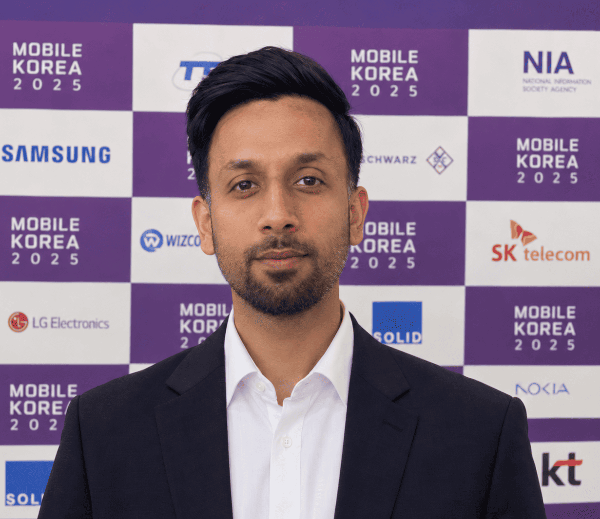
Core research themes
Research at a glance
Profile
I am an electrical and computer engineering researcher working on 6G terrestrial and non-terrestrial network integration. My research combines wireless system modelling with artificial intelligence to address resource allocation, interference management, mobility, and extreme Doppler in future communication networks.
My recent work includes cross-layer multi-agent PPO for integrated air-to-ground and terrestrial networks, deep-learning-based Doppler compensation for VLEO satellite links, and ISAC techniques for LEO satellite communications. I also have experience developing 3D wireless transmission simulation frameworks and leading collaborative research activities.
Academic journey
GPA: 4.13/4.50 · Advisor: Prof. KyungHi Chang. Thesis research on cross-layer multi-agent PPO resource allocation in 6G A2G-TN systems and dual-head TCN Doppler compensation for VLEO satellites.
GPA: 3.45/4.00 · Advisor: Engr. Nauman Ahmad Tariq. Undergraduate thesis on an IoT-based automatic solar-panel cleaning system using Arduino UNO and NodeMCU ESP8266.
Appointments
Continuing research in advanced wireless communications while maintaining institutional details private.
Designed a 3D wireless transmission simulator for supersonic communications; investigated multi-agent PPO for A2G-TN resource allocation; developed VLEO Doppler acquisition and tracking research; and supported system modelling, link-budget analysis, topology selection, and simulation validation.
Research portfolio
My work spans wireless communications, satellite networks, artificial intelligence, and integrated sensing and communications.
Integrated TN/NTN architectures, spectrum coordination, interference management, link budgets, coverage, and resource allocation for future 6G networks.
High-mobility satellite links with severe Doppler, channel dynamics, tracking, and reliable physical-layer communication.
Multi-agent PPO, predictive control, deep learning, and temporal convolutional networks for wireless resource management and signal processing.
Coarse-to-fine frequency-offset acquisition and CP-aided tracking for wide-range Doppler in VLEO satellite systems.
RSMA-ISAC, beam-hopping LEO links, beam squint mitigation, sensing-rate tradeoffs, and power-split beamforming.
Python and MATLAB-based system modelling, 3D network geometry, link-level evaluation, satellite communications, phased arrays, and 5G NR simulation.
Research output
Peer-reviewed journal articles, accepted work, and conference contributions. Visit Google Scholar for the latest citation record.
A. U. Rehman, S. Sualiheen, and K. H. Chang · IEEE Transactions on Communications · 2026
A. U. Rehman, S. Sualiheen, and K. H. Chang · Computer Networks · 2025
S. Sualiheen, A. U. Rehman, and K. H. Chang · IEEE Journal on Selected Areas in Communications · 2026
C. J. Pawase, A. U. Rehman, and K. H. Chang · Journal of Communications and Networks · 2026
A. Samim, A. U. Rehman, and K. H. Chang · IEEE Transactions on Network and Service Management · Accepted, 2026
A. U. Rehman, S. Aslam, and S. Y. Shin · ICMIC 2026 · Taipei, Taiwan
A. Samim, A. U. Rehman, S. Sualiheen, and K. H. Chang · KICS Winter Conference · 2025
A. U. Rehman, S. Sualiheen, and K. H. Chang · KICS Summer Conference · 2024
A. U. Rehman, S. Aslam, and S. Y. Shin · KICS Summer Conference · 2026
D. Khan, S. Aslam, A. U. Rehman, et al. · Submitted to IEEE Open Journal of the Communications Society
Under reviewS. Sualiheen, A. U. Rehman, and K. H. Chang · Submitted to IEEE Transactions on Aerospace and Electronic Systems
Under reviewInnovation
Attiq Ur Rehman and KyungHi Chang · Application No. 10-2026-0010135 · Filed Jan. 15, 2026
Attiq Ur Rehman and KyungHi Chang · Application No. 10-2025-0041998 · Filed Apr. 1, 2025
Korea Copyright Commission · C-2026-008789 · Feb. 18, 2026
Korea Copyright Commission · C-2024-050516 · Feb. 28, 2025
Recognition
ICMIC 2026 · Taipei, Taiwan · RSMA-ISAC for beam-hopping LEO satellite communications
Inha University · 2024–2026
Korean government-funded scholarship · 2024–2026
Mobile Telecommunication Research Lab · 2024–2026
University of Sargodha · Academic distinction
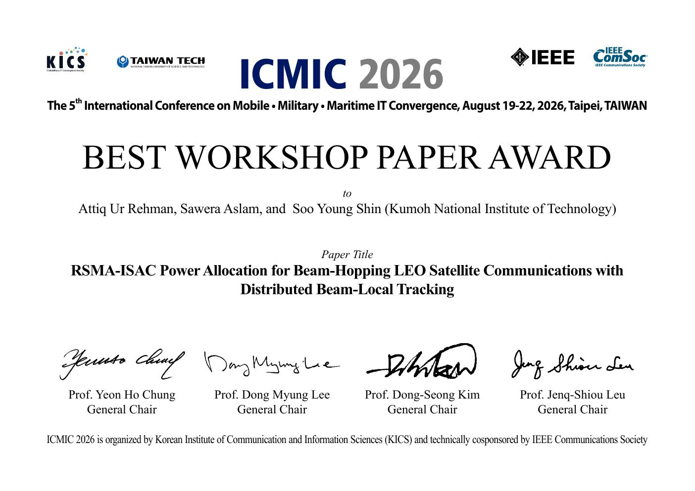
Featured award
Awarded to Attiq Ur Rehman, Sawera Aslam, and Soo Young Shin for “RSMA-ISAC Power Allocation for Beam-Hopping LEO Satellite Communications with Distributed Beam-Local Tracking.”
View certificate ↗Academic & professional moments
Conference presentations, workshops, academic milestones, and research-community activities in South Korea.
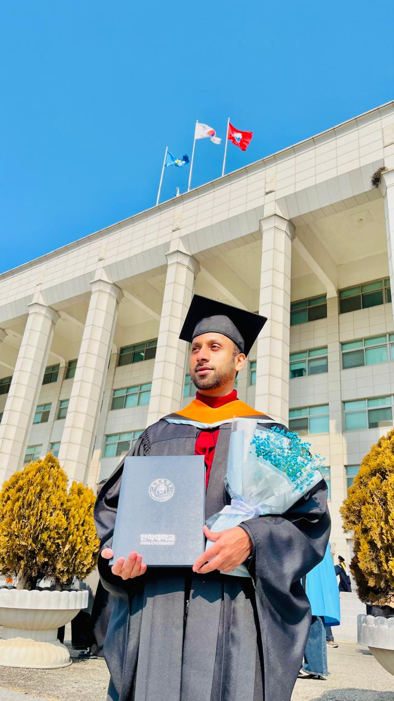
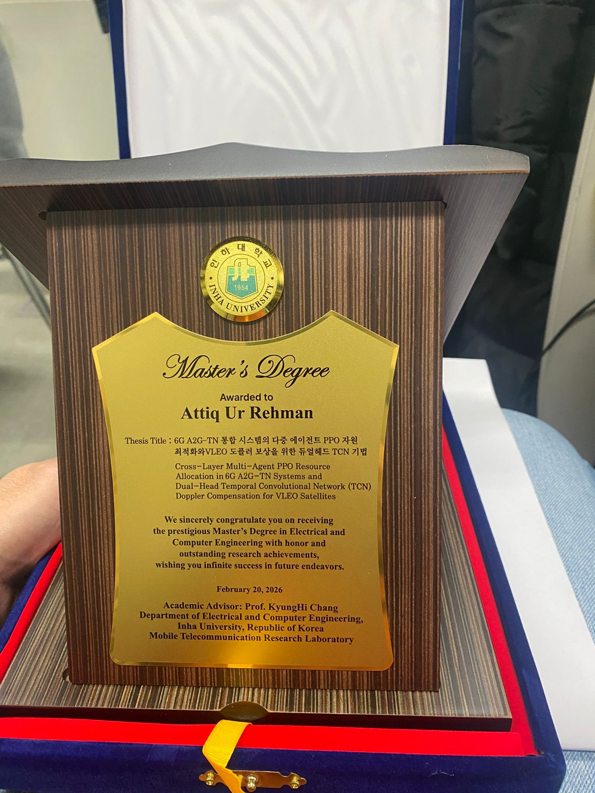
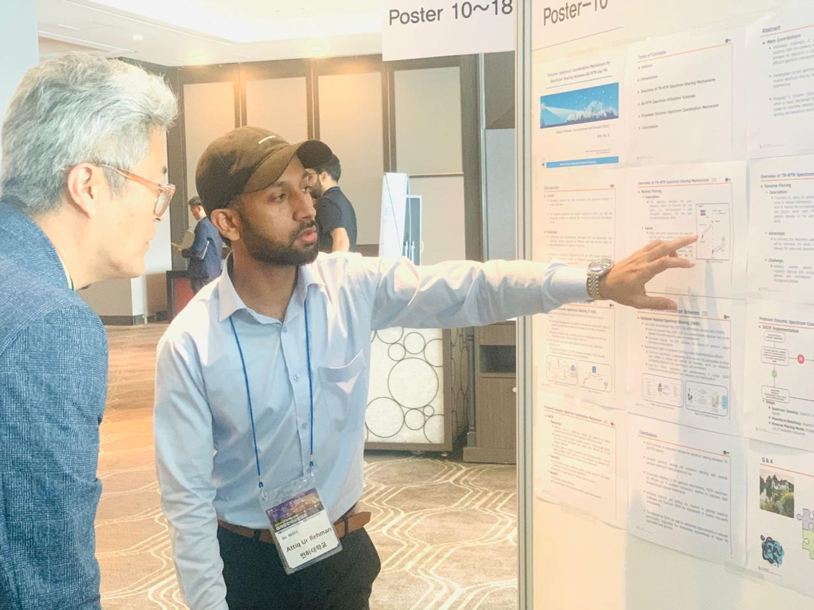
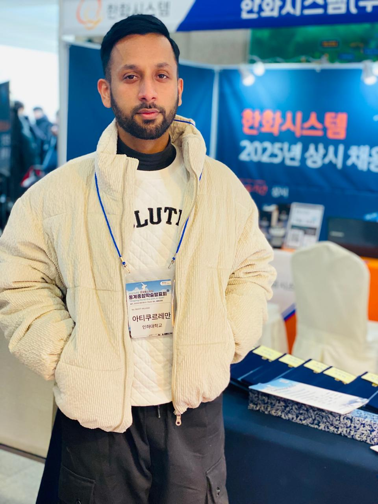
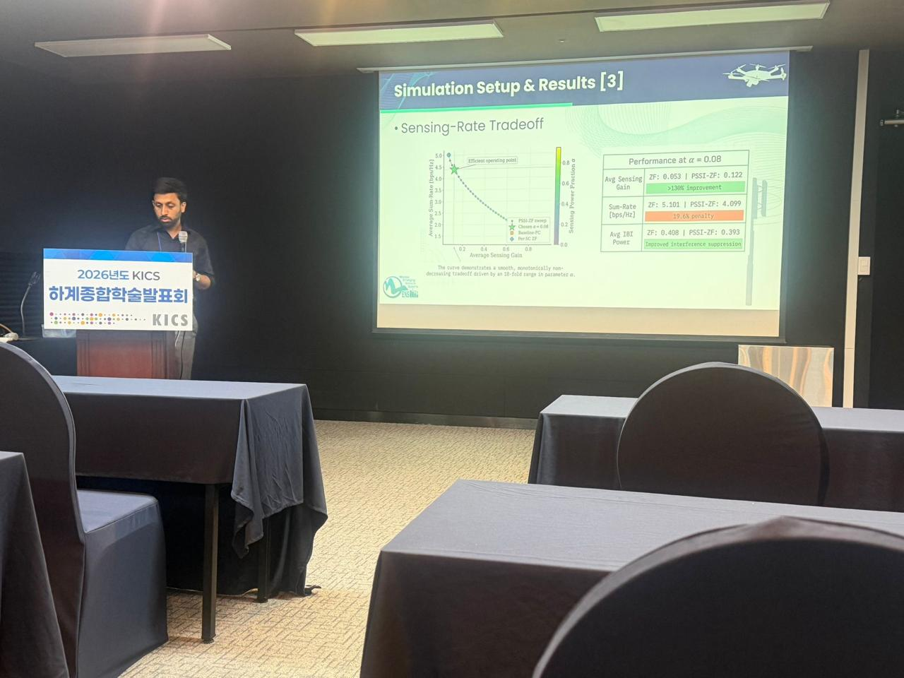
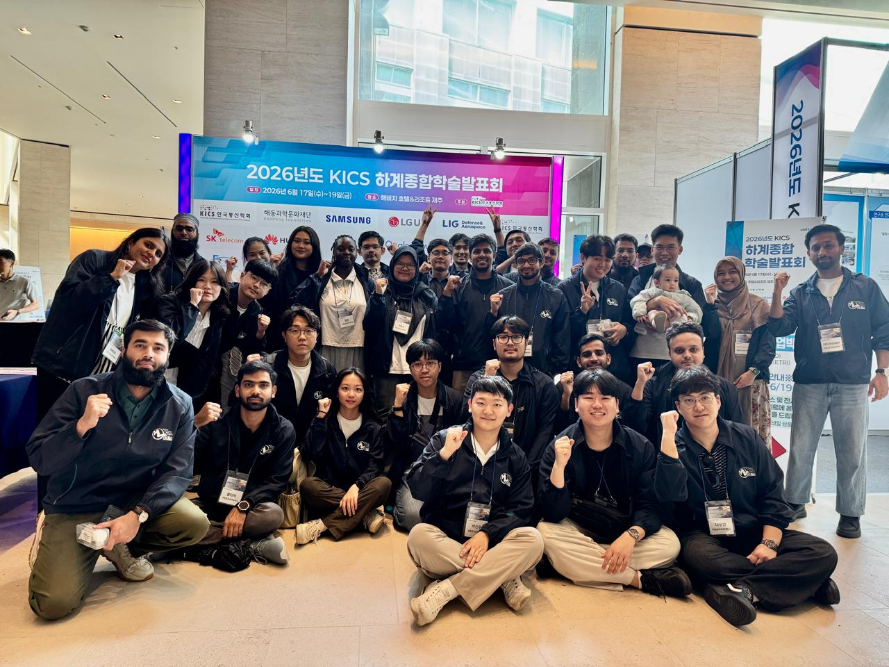
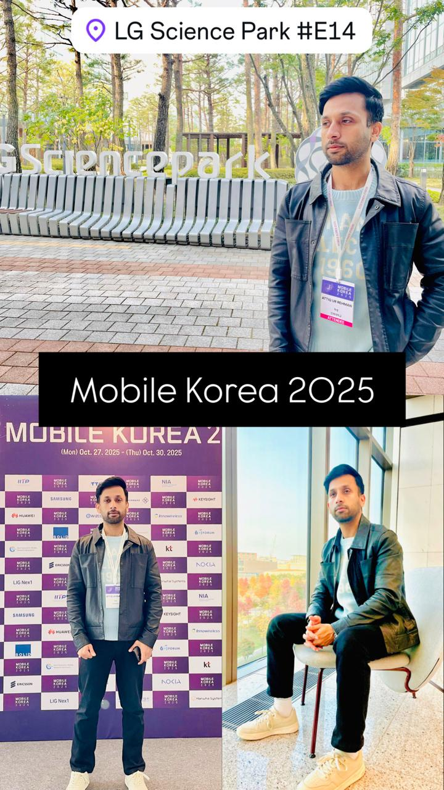
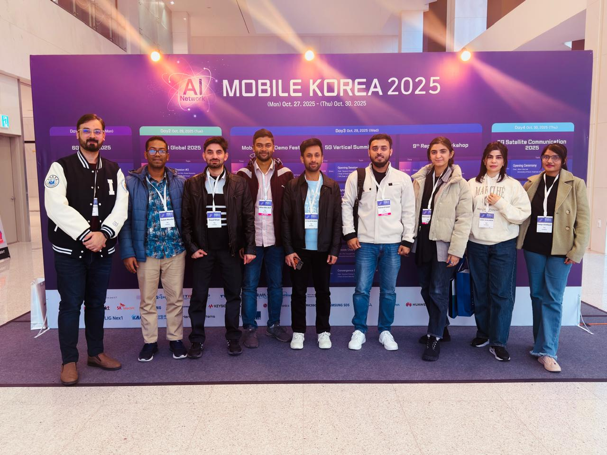
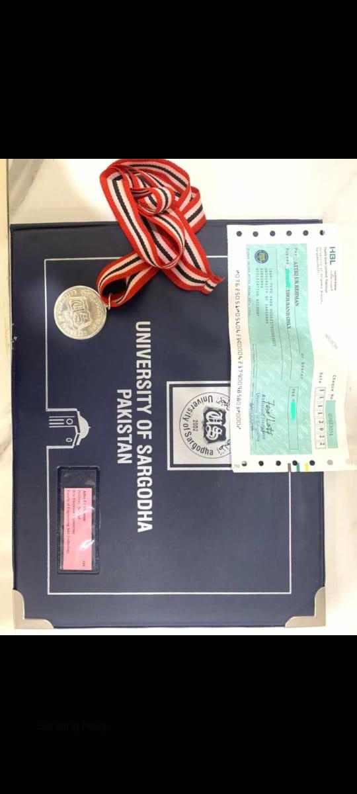
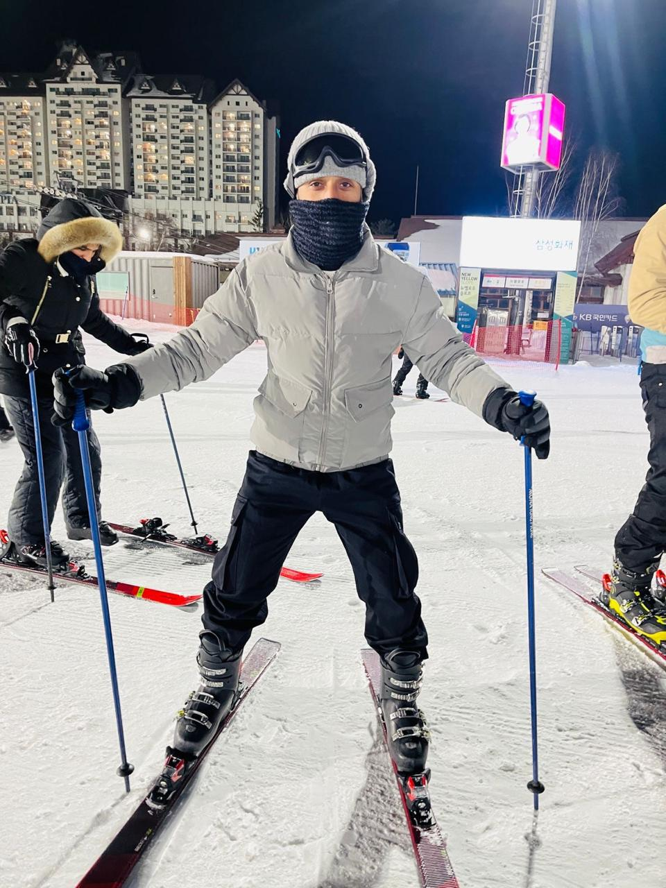
Get in touch
For research discussions and academic collaboration in wireless communications, 6G NTN, satellite systems, AI for networks, and ISAC.